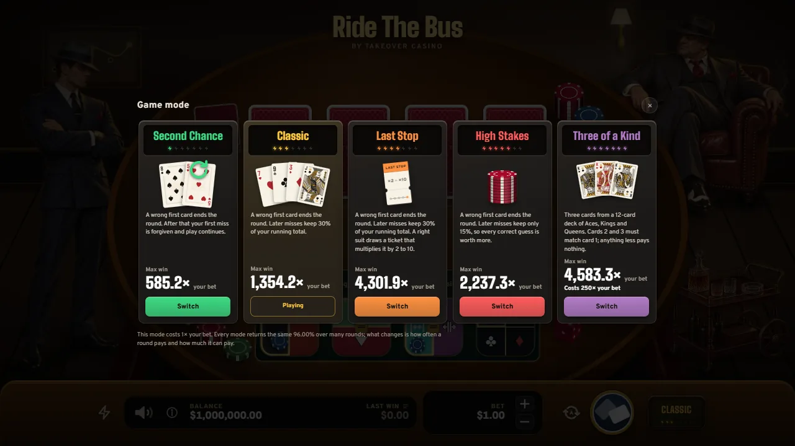

Ride The Bus
A four-guess card game for the Stake Engine platform. Maths and client, built by one person.
In development, not yet released. All footage is captured from the running game.
The maths
Every card is priced by one equation.
Move the chance a guess is right. The multiplier is solved so the expected value of the card stays at the same decay, d, however likely the guess was.
× + × = 0.9975
p · m + (1 − p) · r = d, with d = 0.991/4
Dark line: the case selected. Pale line: the other. Multiplier on a log scale.
Four cards at d each make 0.99 before the books are built.
Each of the 257 published modes is then reweighted so its recorded return is exactly 96%.
A payout floors to the step below. Rounding a fair 1.96× up to 2.0× would erase the margin.
The client's tests replay every published book through its own arithmetic, so the screen and the server can never disagree.
257 modes: four families of 64 combinations, plus one. The highest multiplier each can reach:
- Second ChanceFirst miss from card two keeps 50%
- ClassicThe base rules
- Last StopA right suit draws a 2× to 10× ticket
- High StakesA miss keeps 15%
- Three of a KindThree cards, one rank; costs 250×
How it plays
Four guesses, picked before the deal.
The cards then turn one by one. Each combination of guesses is its own bet mode with its own published table of outcomes. Equal then Inside cannot happen, so each family has 64, not 72.
- ColourRed or black.
- Higher or lowerThan card one, or equal.
- Inside or outsideOf the first two, or equal to one.
- SuitOne of four.


The craft
What the client does with a book.
A win opens the takeover: a departures board whose title rolls like a destination blind through Big, Huge, Mega, Epic and Max, with a bus on the route below.
The held card
On a ride with an Equal pick, the last card is held and peeled from the corner.
The phone
A layout of its own.
The back room
The lights come up on the Floorman and the Boss. A rare win moves them, never before the cards show it.
- 17 languagesEvery string translated, Arabic right to left.
- Sound in codeEvery sound effect synthesised in the browser, under one produced music bed.
- Seven target screensFrom a 320px phone to desktop, each layout checked at all seven.
How it was built
- Maths in Python
- Solves every stage and generates each mode's published book.
- Client in Svelte 5
- Turns each book into the round on screen.
- About 1,000 tests
- A parity suite among them replays every published mode.
- Solo
- One developer, Claude Code as the pair, for the Stake Engine platform.
In development, not yet released.